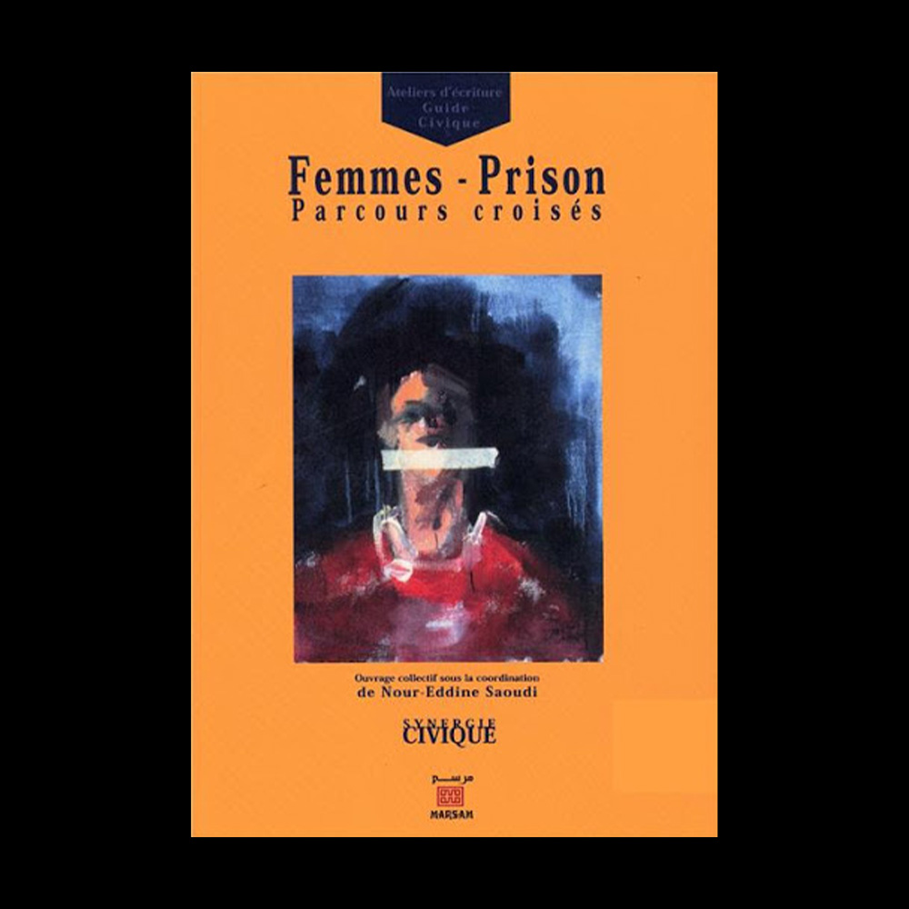
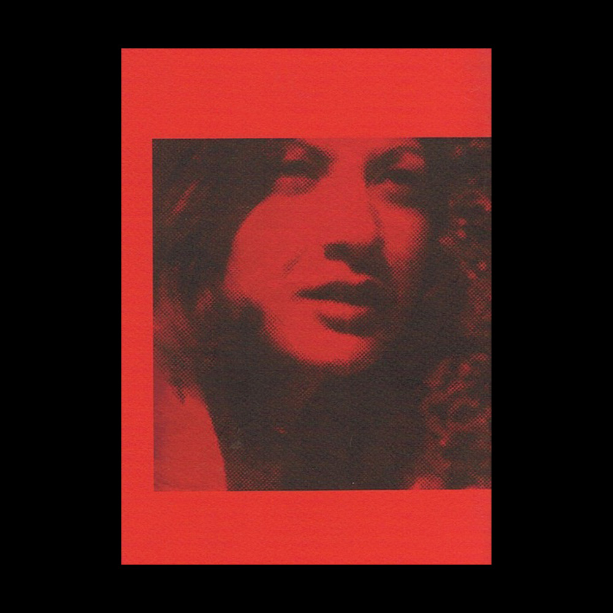
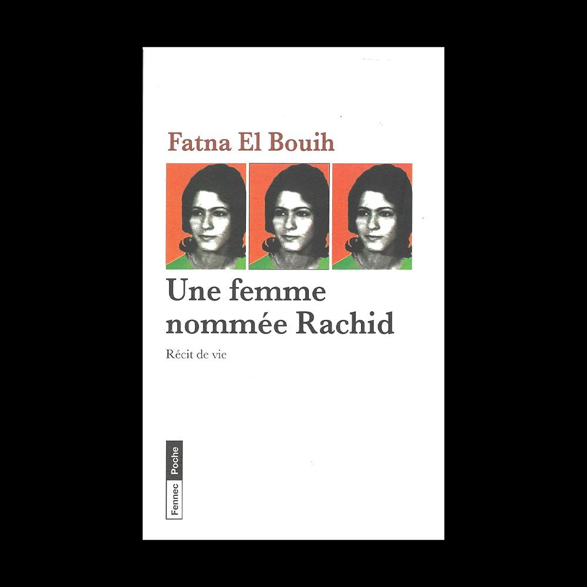
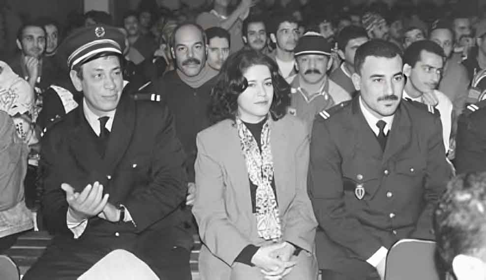
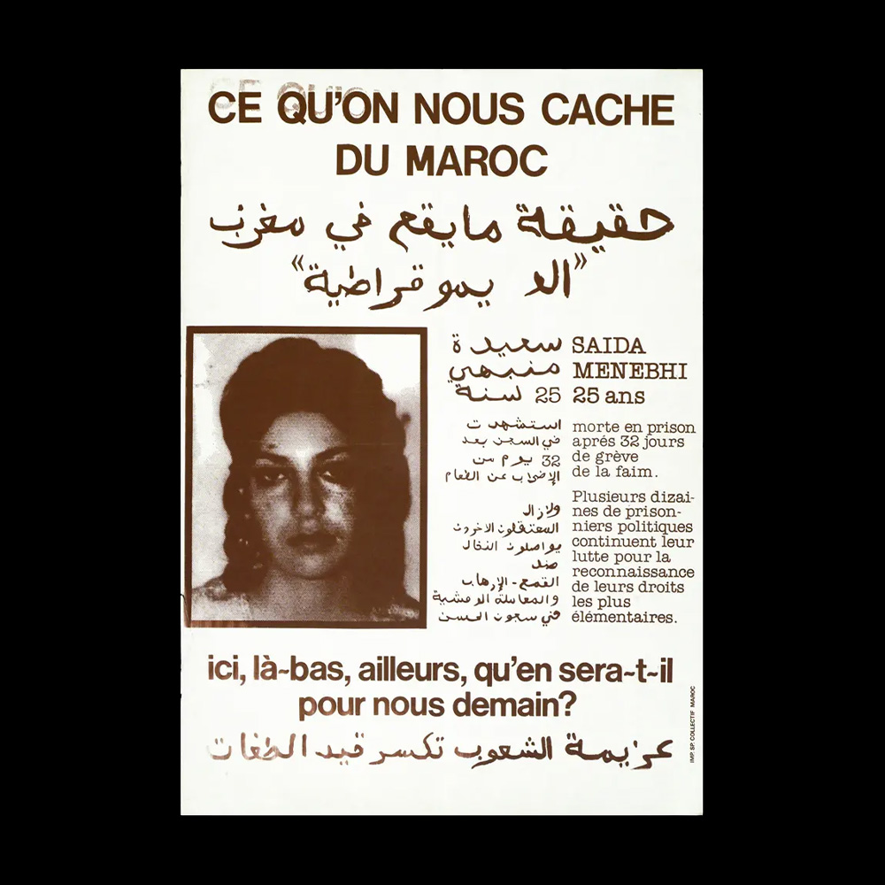
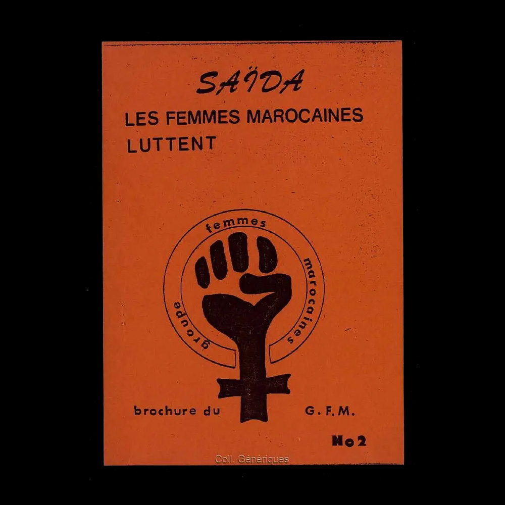

Since the late 1990s, following the conclusion of the period referred to as "les années de plomb" (the Lead Years)⁽¹⁾, Moroccan women have been vocal in both French and Arabic, addressing a range of issues, including historical socio-political injustices and human rights violations in Morocco.
Since the early 1980s, a few prisoners have published in foreign countries their poetry, fiction and personal accounts about prison and torture. The majority, however, published prison testimonies in Morocco after Hassan II’s⁽²⁾ death. The political transition, far from being simply a top-down process, also resulted from the struggle of human rights activists, former prisoners and their families. Beginning in the 1970s, Moroccans residing abroad (MRE)⁽³⁾ created associations to denounce state repression and abuses. In Morocco in the 1970s and the 1980s, activists founded human rights associations.

From left to right: Fatima Oukacha, Nguia Bouda and Fatna El Bouih in Fatna and Nguia's cell at Kenitra prison. Courtesy of Fatna El Bouih.
Prison literature, although overwhelmingly written by men, includes several notable testimonies by women incarcerated during the most repressive period of the Lead Years (1973–1988). These include: Femmes–Prisons: Parcours croisés (Women–prisons: traveled journeys, 2001), which is a collection of letters mothers wrote to their sons and husbands in prison, and Saïda Menebhi: poems, letters, écrits de prison (Saïda Menebhi : Poems, Letters and Writing from Prison, 2000), a compilation of prison writings by the Marxist-Leninist Saïda Menebhi. Additionally, Hadit al-‘atama by Fatna El Bouih was translated into French as Une femme nommée Rachid (A woman named Rachid, 2002) and affirms the resistance of women even as they were tortured in prisons across Morocco.

Noureddine Saoudi, Femmes-prison: Parcours croisés, Éditions Marsam, 181 pages.
Imagine the face of the prison guard reading the letter burning with passion that the wife of one of the political prisoners had just given him: "Lover of my soul, gemini of my psyche, my poet and noble husband Mohamed Ibn al Arbi al-Assafi. My love, I feel the insistent urgency of expressing to you in the columns of this letter my stormy desire and my irresistible tenderness to see you again, even if it is only through the prison bars." (Touria Sekkat "Letters from prison", Dar an-Nachr al-Maghribia. Casablanca, 1988.) Such letters, written during the Years of Lead are an introduction to the underground universe of the unspeakable, that of the wives, mothers and sisters of political prisoners, as it has the merit of capturing fragments of flickering memories of the female crowds swirling around the distressing prison doors. It is these women, called illiterate, who have dug, by dint of harassing police and torturers, the furrows of democracy in Morocco as in the rest of the countries. Arab countries. They were the actors of a profound social change both at the level of the family and at the level of society in general. Their role, however, remained hidden. Tribute is paid here to these women builders of democratic Morocco, to their courage and their stubbornness because they admirably symbolize the emergence of new forms of women's participation in civic action.

Prison, poetry, martyrdom: Saida Menebhi and the Moroccan Years of Lead. Red Press.
Saida Menebhi (1952 in Marrakesh – 11 December 1977 in Casablanca) was a Moroccan poet, high school teacher, and activist with the Marxist revolutionary movement Ila al-Amam. In 1975, she, together with five other members of the movement, was sentenced for seven years of imprisonment for anti-state activity. On November 8, 1977, inside the jail in Casablanca, she participated in a collective hunger strike, and died on the 35th day of the strike at Avicenne Hospital. Her poetry, collected and published first in 1978, and later again in 2000, is considered a prime example of Moroccan revolutionary and feminist literature. She wrote in French. Translations of a selection of her poems to English were published for the first time in 2021 by See Red Press.

Fatna El Bouih, Une femme nommée Rachid, Éditions Le Fennec.
Fatna El Bouih (born 1956) is a Moroccan human rights activist and writer. As a student during the Years of Lead, she became an activist with the leftist youth protest movement, calling for democracy as a member of the National Union of High School Students. She was arrested in 1974 as a leader of a high school student strike, but she was released after a night in jail. She became a leader of Harakat 23 Mars. In 1977, she was arrested again during the mass arrests of members of the "23 Mars" Marxist group. This time, she spent five years in prison, during which she was tortured at Derb Moulay Cherif. However, thanks to a solidarity movement among the inmates, she was able to gain better detention conditions, political prisoner status, and the opportunity to continue her studies. She earned a bachelor's and master's degree while in prison. El Bouih has written several books and other publications on the Years of Lead, the fate of political prisoners, and violence against women. She is the first woman, after the series of books written by men, to provide her own testimony on the human crushing machine that is political detention and the tyranny of the years of lead.
Fatna, A woman named Rachid. A film by Hélène Harder. Produced by Abel Aflam (Morocco), Wendigo Films (France), White Boat Pictures (Belgium).
MER:
How do you see the transition in Morocco?
EL BOUIH:
As a former political prisoner, I feel this enormous psychological relief and unburdening since the death of King Hassan II and note the changes in me and in Morocco. It is only during this "new era" (Ahd Jadid)⁽⁴⁾ that I became really active. Before I just wrote, now I feel useful. For example, my husband and I are among the founding members of the Moroccan Observatory of Prisons (OMP)⁽⁵⁾ officially organized November 13, 1999. I experienced prison, I wanted to help other prisoners, and I found a way to do so through the NGO movement. We write reports, visit prisons, and last Ramadan, we organized festivities first in the women's and then in the men's sections of Oukacha Penitentiary⁽⁶⁾. We are working to establish programs to help prisoners reintegrate into society by paying attention to their individual familial and social contexts, and we work to change laws concerning current prison sentencing practices. The prison authorities have been receptive.
MER:
So now you are back in prison?
EL BOUIH:
Yes, but this time I choose when to go and when to leave.
This Time I Choose When to Leave, An Interview with Fatna El Bouih, Middle East Report, Spring 2001.

Fatna El Bouih, center, flanked by prison guards during an OMP Ramadan party, Oukacha Prison, Casablanca, December 29, 1999.
Initially, Fatna El Bouih's desire to bear witness and make her personal experience public clashed with the socially imposed silence, shame and social stigma surrounding political violence against women. In an interview, El Bouih said that a sense of hchouma⁽⁷⁾ prevented her from talking about her personal experience. The term hchouma translates as “shame” and “decency”, but evokes a complex set of meanings, sentiments and bodily dispositions connected with the values of female modesty, deference and propriety, especially in relation to sexuality (see Namaane-Guessous 1991).

Poster in solidarity with Saida Menebhi. [Text in French: In Morocco, equality is far from being achieved between men and women. However, the death of Saida Menebhi shows that the fight of women and their determination is making the powerful tremble. Committees of the fight against repression in Morocco.]
Political violence against women was a taboo topic in Morocco and has remained a sensitive issue among former political prisoners. When El Bouih became involved in the feminist movement in the early 1990s, she realised that even feminists had difficulty addressing political violence: “I worked in reception centres for battered women. Violence is always assumed to be conjugal and domestic, but political, state violence is a silent violence, nobody talks about it.” To break the silence surrounding political violence against women, since 1994 El Bouih has been sharing her personal experience in newspaper articles and television interviews.

Poster in solidarity with Saida Menebhi. [Text in Arabic & French: What is hidden from us about Morocco? Saida Menebhi, 25, died in prison after 32 days of hunger strike. Several dozen political prisoners continue their fight for recognition of their most basic rights. Here, there, elsewhere, what will happen tomorrow for us?]
In El Bouih’s opinion, women activists were submitted to sexualised violence to erase their gendered subjectivity. “They didn’t want to recognise that we were women. They gave us a number and a man’s name. The woman is haram, is silence.” While denouncing the specific forms of gendered violence that women endured, El Bouih wanted at the same time to de-naturalise the dominant image of Moroccan women as passive or weak subjects: “I wanted to address a Moroccan public primarily to say that in Morocco there are women who contributed to the creation of democracy, to human rights; they were tortured and proved their courage”.
